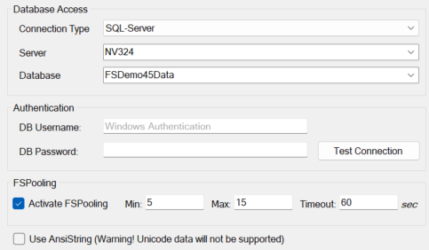

Datenbank-Connection

SQL-Server Connection
- Soll beim Server ein Adresse mit einem Port angegeben werden, dann muss der Port duch ein Komma abgegrenzt werden.
Beispiel:Server=MySqlServer,1234 - Wird kein Username angegeben, dann wird Windows-Authentifizierung verwendet.
Oracle-Connection
Server / Database
Bei der Angabe von Server und Database erzeugt Framework Studio einen TNS-String in dem folgenden Format:
(DESCRIPTION=(ADDRESS_LIST=(ADDRESS=(PROTOCOL=TCP)(HOST=<SERVER>)(PORT=1521)))(CONNECT_DATA=(SID=<Database>)(SERVER=DEDICATED)))
Der Standard-Port 1521 kann über den Server-Namen beeinflusst werden, indem er mit einem : getrennt angegeben wird.
Die Database wird standardmäßig als SID angegeben.
Durch Angabe von SERVICE_NAME= kann die Angabe als SERVICE_NAME definiert werden.
Das kann bei Container-Datenbanken sinnvoll sein.
Beispiel 1:
Server=MyOraServer:1234Database=MyDatabasedasselbe wieDatabase="SID=MyDatabase"Ergibt den folgenden TNS-String:
(DESCRIPTION=(ADDRESS_LIST=(ADDRESS=(PROTOCOL=TCP)(HOST=MyOraServer)(PORT=1234)))(CONNECT_DATA=(SID=MyDatabase)(SERVER=DEDICATED)))
Beispiel 2:
Server=[2607:f0d0:1002:51::4]:1234(IPv6-Adresse mit Port)Database="SERVICE_NAME=MyDatabase"Ergibt den folgenden TNS-String:
(DESCRIPTION=(ADDRESS_LIST=(ADDRESS=(PROTOCOL=TCP)(HOST=[2607:f0d0:1002:51::4])(PORT=1234)))(CONNECT_DATA=(SERVICE_NAME=MyDatabase)(SERVER=DEDICATED)))
tnsnames.ora
Wird kein Server angegeben, dann erzeugt Framework Studio keinen TNS-String sondern verwendet Database direkt als DataSource.
So kann man einen in der tnsnames.ora konfigurierten TNS-Alias bei Database angeben.
TNS-String
Wird kein Server angegeben, dann kann bei Database auch ein kompletter TNS-String angegeben werden. Das kann benutzt werden, wenn der automatisch generierte TNS-String nicht ausreicht.
Einstellungen im Detail
Im folgenden werden die Parameter für eine Connection erklärt.
Neben der Oberfläche können diese Angaben auch in einem Connection-String für die FrameworkDataConnection verwendet werden.
Beispiel für einen Connection-String: FSProviderType=SqlServer;Server=MyDBServer;Database=MyBusinessDB;UserID=sa;Password=geheim!
Connection Type
Gibt an, mit was für einer Datenbank (SQL-Server oder Oracle Managed) gearbeitet werden soll.
- Name im Connection-String:
FSProviderType - gültige Werte:
SqlServer,OracleManaged - Beispiel:
FSProviderType=SqlServer
Server
Der Server, auf dem die Datenbank liegt (siehe oben),
- Name im Connection-String:
Server - Beispiel:
Server=MyDBServer
Database
Name der Datenbank (siehe oben)
- Name im Connection-String:
Database - Beispiel:
Database=MyBusinessDB
DB Username
Benutzer-Name für die Anmeldung. Wird bei SQL-Server kein UserName angegeben, dann wird Windows-Authentifizierung verwendet.
- Name im Connection-String:
UserID - Beispiel:
UserID=sysadm
Password
Das Passwort für die Anmeldung.
- Name im Connection-String:
Password - Beispiel:
Password=geheim!123
Wird das Password in der Oberfläche eingegeben, dann erzeugt Framework Studio ein verschlüsseltes Passwort.
- Name im Connection-String:
PasswordEncrypted - Beispiel:
PasswordEncrypted=K96Px6YBomSeHPMr/IgnZg==
Diese Vershlüsselung ist nicht sehr sicher - es wird lediglich verhindert, dass ein Benutzer das Passwort einfach lesen kann.
Use AnsiString
Gibt an, ob die String-Parameter in den Commands als Ansi-String behandelt werden sollen.
- Name im Connection-String:
FSUseAnsiString - Standard-Wert:
false - Beispiel:
FSUseAnsiString=true
Caution
Wenn aktiviert, dann können keine Unicode-Inhalte zur Datenbank transportiert werden.
Connection-Pooling
Der Connection-Pool stellt eine Menge von freien wiederverwendbaren Datenbank-Verbindungen zur Verfügung. Dabei kann über die FSPooling-Parameter das Verhalten des Pools gesteuert werden.
Eine mit Framework Studio entwickelte Anwendung benötigt eine Datenbankverbindung, um mit dem zugehörigen Broker zu kommunizieren. Bei jedem Request wird eine Verbindung aufgebaut und danach wieder geschlossen. Da dieses Verhalten vor allem auf Oracle-Datenbankservern sehr viel Zeit in Anspruch nimmt, kann vom Broker eine bestimmte Anzahl an offenen Datenbankverbindungen vorgehalten werden, auf die die Anwendung zurückgreifen kann.
Die Parameter haben die folgende Bedeutung:
FSPoolingMin: Wird eine Connection nicht mehr benötigt, wird sie (z.B. am Ende eines Broker-Requests) wieder zurück in den Vorrat / Pool gepackt. Der Pool darf dauerhaft diese Anzahl an Connections beinhalten.FSPoolingMax: Das ist die maximale Anzahl der Connections, die sich im Pool befinden dürfen. Ist der Pool voll, dann wird die Connection nicht in den Pool zurückgepackt sondern sie wird direkt geschlossen.FSPoolingTimeout: (in Sekunden) Die Connections zwischen Min und Max verbleiben maximal diese Zeit im Pool. Werden sie nicht vorher wieder verwendet, werden sie nach dem Timeout aus dem Pool entfernt und geschlossen. Der Timeout wird geprüft, wenn versucht wird, eine Connection in den Pool zu packen.
In der Oberfläche kann das Pooling mit der Checkbox Activate FSPooling aktiviert werden.
Min
Anzahl der Datenbank-Connections, die dauerhaft im Connection-Pool verbleiben sollen.
- Name im Connection-String:
FSPoolingMin - Standard-Wert:
5 - Beispiel:
FSPoolingMin=5
Max
Anzahl der Datenbank-Connections, die maximal im Connection-Pool enthalten sein dürfen. Jede weitere Connection wird unmittelbar nach der Verwendung wieder getrennt.
- Name im Connection-String:
FSPoolingMax - Standard-Wert:
15 - Beispiel:
FSPoolingMax=15
Timeout
Timeout in Sekunden. Diese Zeit verbleiben die zusätzlichen Datenbank-Connections im Pool, bis auch sie getrennt werden.
- Name im Connection-String:
FSPoolingTimeout - Standard-Wert:
60 - Beispiel:
FSPoolingTimeout=60
FSPoolingDebugOutput
Gibt einen Dateinamen an, in dem der Connection-Pool ein Protokoll schreiben soll. Dieses kann für die Analyse des Connection-Pools verwendet werden.
(siehe Kapitel Connection Pooling Protokoll)
Diese Einstellung kann nicht über die Oberfläche definiert werden.
- Name im Connection-String:
FSPoolingDebugOutput - Beispiel:
FSPoolingDebugOutput=C:\temp\FSPool.txt
Weitere Parameter
Die von Framework Studio nicht erkannt werden, werden direkt in den nativen Connection-String übernommen. So können auch native Features der jeweiligen Datenbank genutzt werden.